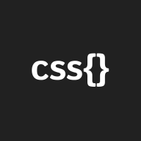
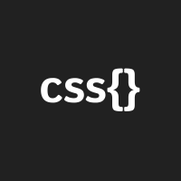

Hi there!
I'm an Associate Technology at Accenture Australia.
I love to create intuitive, useful and enjoyable digital solutions.
Experience and Achievements
Associate Technology Consultant Accenture Australia Jun 2018 -
Client requirement gathering through design thinking processes.
Web Design Demonstrator The University of SydneyJun 2017 – Jun 2018
Engaging communication of content and guidance in effective coding practices.
ThinkPlace Award for Exceptional Public Value Design 2017
For demonstrating innovation and excellence in the field of design.
Sales Representative Jun 2016 – Dec 2016
Foundation skills of sales principles and customer communication
Rowing Coach Newcastle Grammar School 2014–2016
Teaching athletes to develop mental and physical discipline.
Education
First Year
Digital Media Production, Visual Communication, Design Thinking, 3D Modelling, Sound Design, Principles of Animation
Second Year
Database Systems, UX Design Studio, Games and Play, Web Design and Technologies, Interaction Design Studio, Philosophy of Logic
Third Year
Innovation Design Studio, Information Visualisation Design Studio, Designing in VR, Independent Study: VAD Nurses, Interactive Product Design, A survey on buddhism
Software Skills
 
